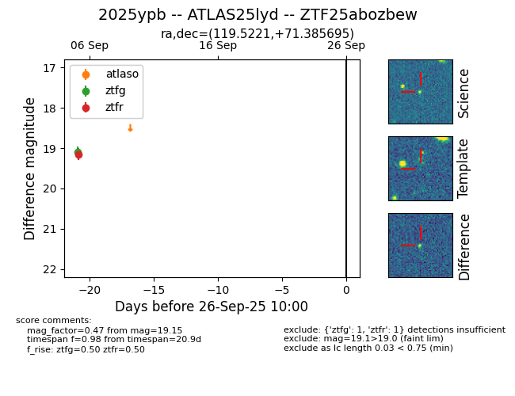

FINK: ZTF25abozbew
Lasair: ZTF25abozbew
ALeRCE: ZTF25abozbew
TNS: 2025ypb
YSE: 2025ypb
ZTF25abozbew (ztf,fink)
2025ypb (tns,yse)
ATLAS25lyd (atlas)
equatorial (ra, dec) = (119.5221,+71.38569)
galactic (l, b) = (143.8104,+30.90302)

last ztfg=19.09, ztfr=19.15
1 ztfg, 1 ztfr detections